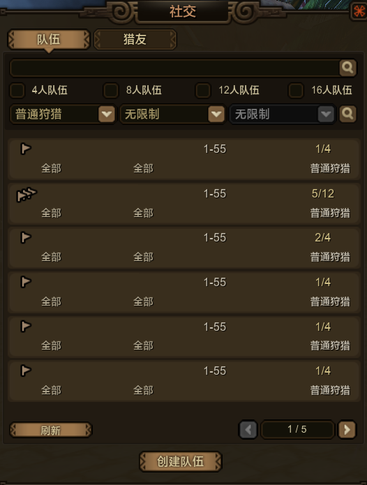
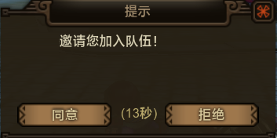
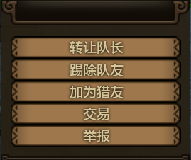

Pressing "Y" while not in a hunt will first take you to the Public Grouping tool. This will allow you to see other hunting groups and request membership into their party.
There are various dropdowns to find groups for specific situations and quests, but it is more than likely you will never find anything by using the dropdowns since not many people switch from the default options when creating a group.
Once you have found a group to your liking click on it. You will be brought to the next screen. Press the button on the left to ask to join, and the right button exits back to the previous screen.

If you switch over to the second tab you will see the friends list.

Adding someone as a friend is as simple as clicking the button on the Left and typing in their name. Click the button on the left to confirm and the button on the right to exit.

This tab also has other things on it too. They are:

If you click the button on the right you can create your own grouping category for friends.
If you right click on a friend it will come up with this menu:

It's options are:
If you try to invite somebody to a party and it comes up with red text, it usually means they are in a hunt or somewhere that they can't accept party invites.
This is the popup when somebody invites you to a party. The Left button is accept, the Right button is decline.
Once you have invited someone to your party you have some options if you right click thier name in the top left of your screen.
You can also manage your party from party screen by pressing "Y" From this screen pressing the Right button will leave the party.